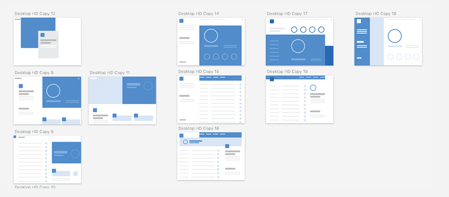
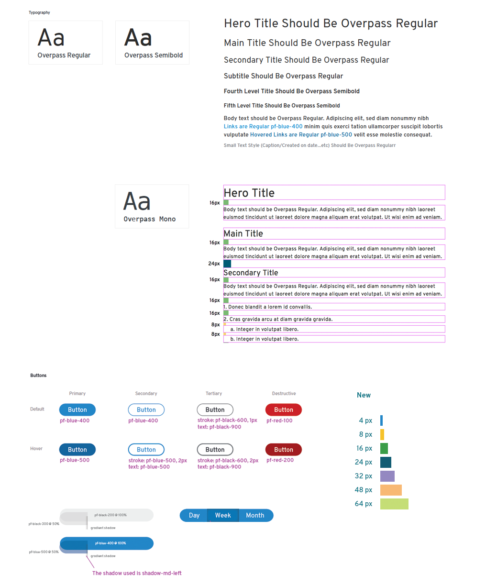
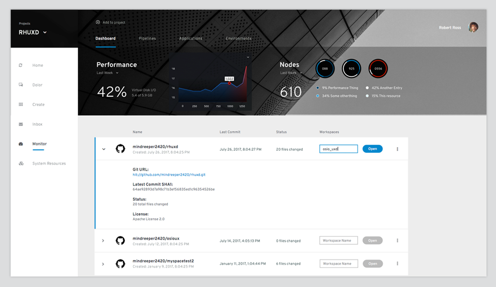
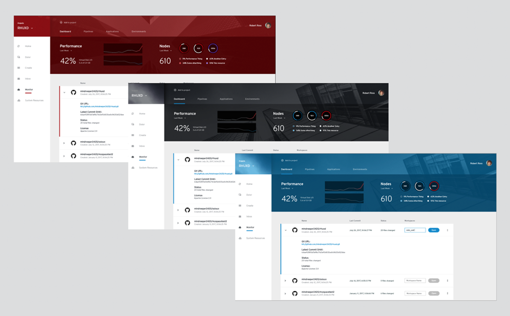
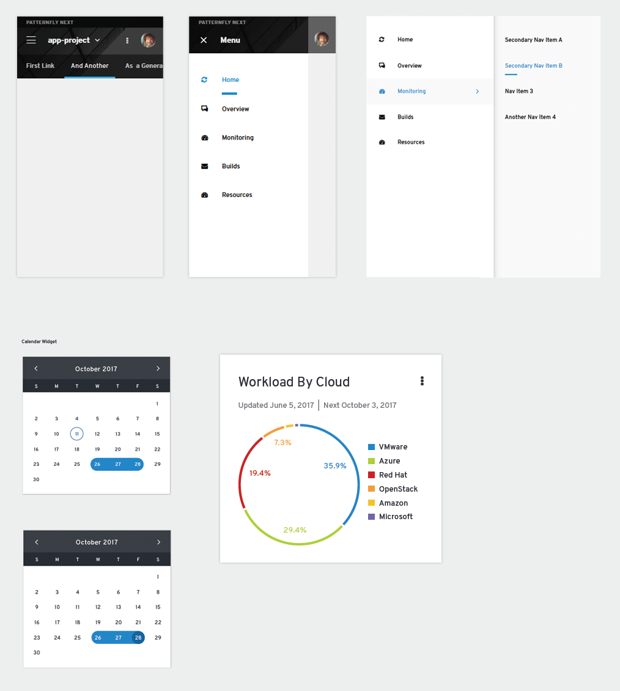
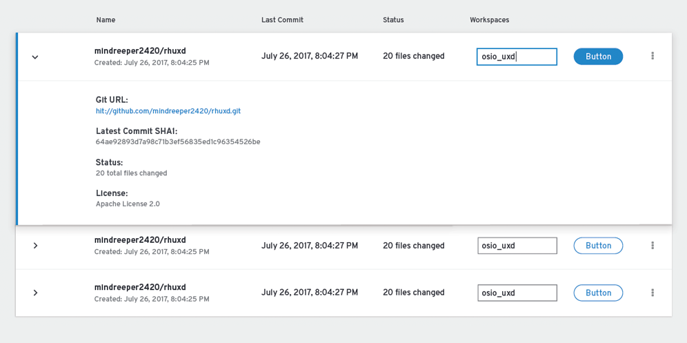
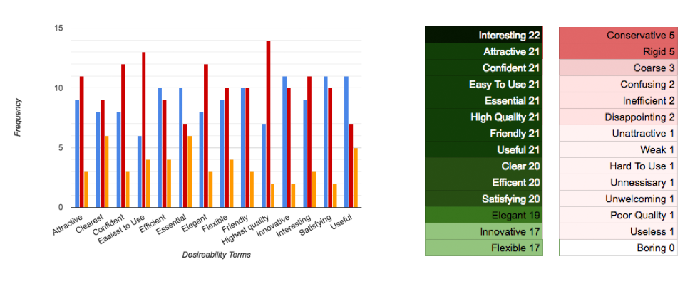

<!DOCTYPE html>
<html lang="en">

<head>
  <meta charset="UTF-8">
  <meta name="viewport" content="width=device-width, initial-scale=1.0">
  <meta http-equiv="X-UA-Compatible" content="ie=edge">
  <title>Kyle Baker | Senior Digital Designer & Creative</title>

  <link rel="stylesheet" href="css/base.css">
  <link rel="stylesheet" href="https://use.fontawesome.com/releases/v5.0.10/css/all.css" integrity="sha384-+d0P83n9kaQMCwj8F4RJB66tzIwOKmrdb46+porD/OvrJ+37WqIM7UoBtwHO6Nlg"
    crossorigin="anonymous">
</head>

<body>

  <div class="wrapper">

    <header class="section section--innerpage section--dark section--innerheader">
      <div class="brand">
        <a href="index.html" class="logo">
          
        </a>
      </div>
      <nav class="container">
        <ul class="nav">
          <li class="nav__item">
            <a class="nav__link" href="index.html#work">Work</a>
          </li>
          <li class="nav__item">
            <a class="nav__link" href="Kyle-Baker-Resume.pdf">Resume</a>
          </li>
          <li class="nav__item">
            <a class="nav__link" href="index.html#contact">Contact</a>
          </li>
        </ul>
      </nav>
    </header>

    <section class="section section--innerpage" id="work">
      <div class="container">
        <div class="content">
          <div class="title">
            <h3 class="title-main">Red Hats New User Interface System: PatternFly Next</h3>
            <h2 class="title-sub">DESIGN LEAD, VISUAL/INTERACTION DESIGNER</h2>
          </div>


          <p>
            With the growth of Red Hat, their is a much more diverse set of applications and use cases. Specifically, they have added
            consumer facing applications to their portfolio, which have a marketing focused aesthetic that is missing from
            our current design library.
          </p>
          <p>
            I was tasked with leading the effort to design a new system with modern aesthetics which put an emphasis workflow. I was
            also challenged to collaborate with the 90 member UXD team across disciplines to efficiently produce a high quality
            product. The final product must rate measurably higher than our current designs and their competition.
          </p>
          <h2 class="title-sub margin-sub">ADDITIONAL GOALS</h2>

          <ul>
            <li>Develop a new visual system which customers rate consistently higher than our current designs</li>
            <li>Create new system of assets which enables anyone to create a more consistent, higher quality design</li>
            <li>Collaborate across disciplines to efficiently produce a high quality product</li>
            <li>Design a ‘modular’ system which can be applied to any type of UI with any branding
            </li>
            <li>New system seamlessly adapts to the new CSS structure
            </li>
            <li>Flexible enough design to be applied to multiple front-end technologies
            </li>
          </ul>

          <div class="title title--alt">
            <h3 class="title-secondary">Planning</h3>
          </div>
          <p>Due to the scope of this massive project as well as the number of stakeholders it was important to identify key
            members of the team and get agreement on the planning and goals.</p>

          <ol class="circles">
            <li class="circle">IDENTIFY GOALS</li>
            <li class="circle">IDENTIFY STAKEHOLDERS</li>
            <li class="circle">DEFINE A PLAN</li>
            <li class="circle">DEFINE REQUIREMENTS</li>
          </ol>

          <div class="title title--alt">
            <h3 class="title-secondary">Design Process: Concepting</h3>
          </div>
          <p>Starting with low fidelity allowed us to conceptualize a system. We are able to define how the patterns and styling
            would expand to accommodate Red Hats entire portfolio.</p>
          <div class="img">
            
          </div>
          <div class="img">
            
          </div>

          <div class="title title--alt">
            <h3 class="title-secondary">Design Process: Defining Interactions and Visual Styling</h3>
          </div>
          <p>We started with the basics defining basic components and applying styling which reflected modern aesthetics and
            Red Hat brand. When defining the visualizations we worked together with development to define a system of variables
            which were directly reflected in the mockups. Defining this system helps developers translate mockups quickly
            and accurately.</p>
          <div class="img img--full">
            
          </div>
          <div class="img img--full">
            
          </div>
          <div class="img img--full">
            
          </div>
          <div class="img img--full">
            
          </div>
          <div class="img img--full margin-lg">
            
          </div>

          <div class="title title--alt">
            <h3 class="title-secondary">Measuring Look & Feel</h3>
          </div>
          <p>Desirability studies are designed to quantify participants emotions. Participants are given a vocabulary of positive/negative
            word pairs which they use to rate the design. Participants are asked to compare designs based on a given term.
          </p>

          <div class="split">
            <div class="split__side">
              <div class="circle circle--lg">66%</div>
            </div>
            <div class="split__main">
              <p class="title-sub">THIS DESIGN RECEIVED A MAJORITY OF THE POSITIVE FEEDBACK OVER THE CURRENT AND COMPETITIVE DESIGNS</p>
            </div>
          </div>


          <div class="img img--full">
            
          </div>

        </div>
      </div>
    </section>
    <footer class="section section--innerpage section--footer">
        <div class="container">
          <p>© 2018 Kyle Baker - All Rights Reserved.</p>
        </div>
      </footer>
  </div>
  <!-- wrapper -->

</body>

</html>